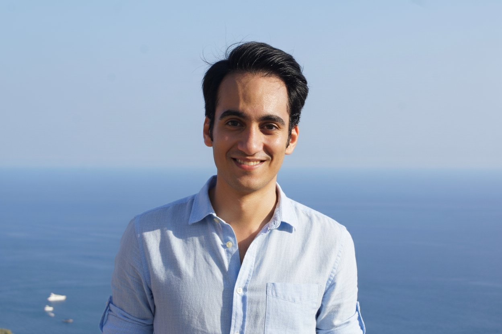

---
---
{%- comment -%}
Concept 2, the spatial canvas (lab only): the CV as glass panes laid out like a map over
the dot field, around a pane for Ali himself, his photo in it. Wires run from his pane to
each section like a node graph. The rail lists the sections by name, with a small map of
the whole canvas under them; a pill at the bottom steps through them in the CV's order.
The coral orb goes everywhere with you, riding the corner of the pane in view (its
.orb-slot), and opens Alino, Ali’s assistant, who answers from the CV (lab/ask.js).
The font switcher tries pairings of typefaces (data-fonts on , canvas.css).
The order of `places` is that order, clockwise from the top left. Each pane's place
(data-x, data-y: its centre) and size are in world pixels.
{%- endcomment -%}
{%- assign data = site.data.en -%}
{%- assign ui = data.ui -%}
{%- assign places = "about:-1120:-760:760:540,experience:0:-800:900:620,projects:1140:-810:860:640,skills:1140:0:860:480,education:1140:740:860:500,publications:0:720:900:460,blog:-1120:770:760:560,interests:-1120:0:760:380" | split: "," -%}
{%- include lab/head.html title="Concept 2 · Spatial canvas" %}

{{ data.profile.role | escape }}
{{ data.profile.name | escape }}
I build production GenAI systems end to end, from agentic RAG and fine-tuning to evaluation and reliable deployment on AWS, and lead the small teams that ship them.
{%- include lab/actions.html %}
{%- for place in places %}
{%- assign bits = place | split: ":" %}
{%- assign id = bits[0] %}
{%- assign item = ui.nav | where: "tab", id | first %}
{{ item.label | escape }}
{% include lab/section.html id=id %}
{{ item.label | escape }}
{%- endfor %}
Ask Alino/
{%- comment -%} data-endpoint: the AI proxy that keeps its key on a server (lab/ask-proxy, deployed on Cloudflare) {%- endcomment %}
AlinoAli’s assistant, answers from his CVEsc
{%- assign asks = "Has he led a team?|What has he built with RAG?|Which cloud does he use?|Has he published research?|What does he do for fun?|How can I reach him?" | split: "|" %}
{%- for ask in asks %}
{%- endfor %}
Alino · answers from his CV
Titles & labels
Reading text
Drag to look around · Arrows to move · Esc for the map
{%- include theme-toggle.html id="canvas" label=ui.theme class="concept-theme" %}